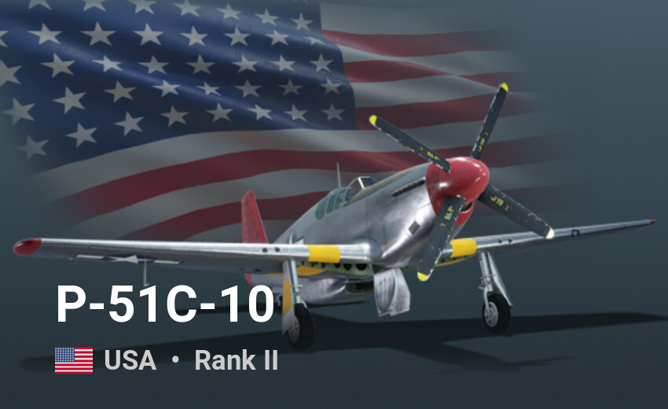
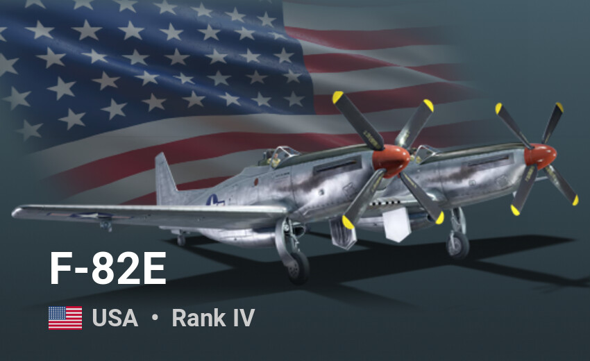
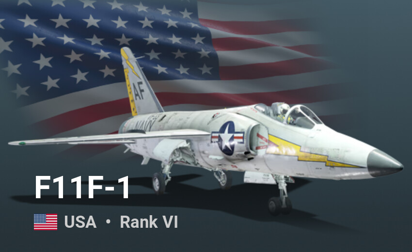
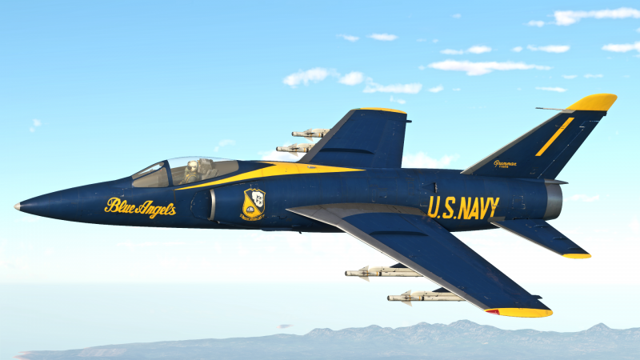
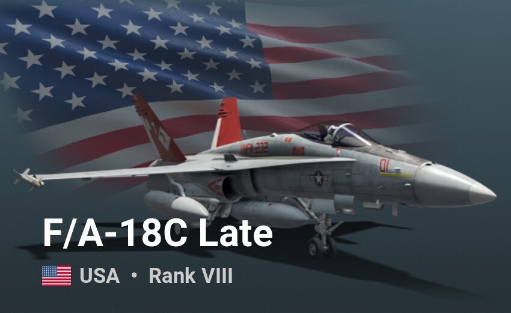

Losowe pojazdy yey

North American P-51 Mustang – amerykański jednosilnikowy myśliwiec okresu drugiej wojny światowej zaprojektowany na zlecenie RAF-u, produkowany w zakładach North American Aviation (NAA) w Stanach Zjednoczonych (zakłady w Kalifornii i Teksasie) oraz w znacznie mniejszej liczbie przez Commonwealth Aircraft Corporation w Australii. Używany był przez USA i ich sojuszników zarówno podczas drugiej wojny światowej, jak i wojny koreańskiej (jako samolot szturmowy). Udana konstrukcja z 1940 roku sprawiła, że ostatni projekt samolotu bojowego opartego na P-51 zamknięto dopiero w 1986 roku, kończąc tym samym 46 lat rozwoju jednej konstrukcji. Obecnie wiele z tych maszyn znajduje się w rękach prywatnych. Latają one podczas pokazów i zawodów sportowych. Ogółem wyprodukowano 15-16 tys. Mustangów.

North American P-82 Twin Mustang (po powstaniu USAF F-82) – dwuosobowy amerykański myśliwiec eskortujący dalekiego zasięgu, powstały przez połączenie dwóch kadłubów samolotu P-51 Mustang, produkowany w zakładach North American Aviation (NAA). Twin Mustang był jednym z najszybszych myśliwców tłokowych. Dysponował wyjątkowym zasięgiem i dobrymi pozostałymi charakterystykami. Pilotowanie tego samolotu niewiele odbiegało od latania na "zwykłym" Mustangu.

Grumman F-11 Tiger – myśliwiec pokładowy Marynarki Wojennej Stanów Zjednoczonych używany bojowo w latach 50. i 60., a następnie do końca lat 70. używany przez drużynę akrobacyjną Blue Angels. Oryginalnie samolot nosił oznaczenie F11F Tiger, które zostało w 1962 zmienione na F-11 Tiger w ramach umowy dotyczącej wspólnego systemu oznaczeń. Łącznie zbudowano ok. 200 „Tygrysów”, ostatni z nich został dostarczony 23 stycznia 1959 roku.
Służba
Tigery operowały z lotniskowców USS „Ranger”, USS „Intrepid”, USS „Bon Homme Richard”, USS „Forrestal” i USS „Saratoga”. Kariera F-11 jako głównych myśliwców US Navy trwała tylko cztery lata, zostały wycofane głównie z powodu problemów z ich silnikami i wejścia do produkcji Chance Voughtów F-8 Crusaderów o lepszych osiągach. Ostatnie Tigery zostały wycofane z lotniskowców w 1961, ale niektóre samoloty zostały przekazane do szkół lotniczych, gdzie używane były do końca lat 60. Nowi piloci po ukończeniu kursu zaawansowanego pilotażu na myśliwcach F-9 Cougar odbywali zazwyczaj kilka ponaddźwiękowych lotów w F-11.
F-11 używane były znacznie dłużej w zespole akrobacyjnym Blue Angels, który używał tych samolotów w latach 1957-69.

Fun fact:
Tiger był pierwszym odrzutowym myśliwcem, który zestrzelił sam siebie. 21 września 1956 doświadczony oblatywacz Thomas W. Attridge wystartował do lotu, w czasie którego miał sprawdzić działka samolotu. Lecąc nad oceanem na wysokości ok. 6000 metrów Attridge wszedł w płytki lot nurkowy (ok 20°) i na pułapie 4000 m wystrzelił czterosekundową salwę (ok. 70 pocisków). Attridge przyspieszył włączając dopalacz, zwiększył nieco kąt nurkowania i po zejściu na pułap 2100 m otworzył ponownie ogień aby wystrzelać amunicję do końca. Tuż po zakończeniu drugiej salwy samolot wpadł na wystrzelone przez siebie w czasie pierwszej salwy pociski, które uszkodziły owiewkę kabiny pilota i silnik. Attridge zawrócił do bazy, ale silnik ostatecznie zawiódł niecały kilometr od lotniska i pilot został zmuszony do awaryjnego lądowania. Na szczęście dla pilota w czasie testów działek użyto pocisków „ćwiczebnych”, bez ładunku wybuchowego. Ten niezwykły wypadek samozestrzelenia ujawniono publicznie dopiero pięć tygodni później, wydano także zalecenia dla pilotów aby po oddaniu salwy zawsze zmieniali nieco kierunek lotu.

F/A-18 Hornet (wersje A–D) – amerykański pokładowy samolot naddźwiękowy, samolot myśliwski i myśliwiec wielozadaniowy zdolny do działań w każdych warunkach atmosferycznych. Wielką zaletą Hornetów jest ich bezawaryjność i szybka, prosta obsługa naziemna, oraz możliwość przenoszenia różnorodnego uzbrojenia, co daje dowódcy więcej możliwości na szybko zmieniającym się polu bitwy.
Ogólna charakterystyka, modele C i D:
- Funkcja: Samolot wielozadaniowy i samolot szturmowy
- Producent: McDonnell Douglas – obecnie Boeing oraz, w wersji F18L, Northrop – obecnie Northrop Grumman
- Koszt: 24 mln dolarów (84 mln PLN)
- Napęd: 2 silniki F404-GE-402
- Ciąg: 17.700 funtów (8.027 kg) na silnik
- Długość: 16,8 m
- Wysokość: 4,6 m
- Maksymalna masa startowa: 23,537 kg
- Rozpiętość skrzydeł: 13,5 m
- Zasięg:
- Konfiguracja myśliwca: 1379 mil morskich (1585,9 mil/2.537 km)
- Konfiguracja samolotu szturmowego: 1333 mil morskich (1532,9 mil/2,453 km)
- Pułap: 50000 stóp (15 km)
- Prędkość: 1.8 Ma (2205 km/h)
- Załoga:
- wersje A, C: 1
- wersje B, D: 2
- Uzbrojenie:
- jedno działko napędowe M61A1/A2 Vulcan kalibru 20 mm z zapasem 578 szt. amunicji
- pociski rakietowe powietrze-powietrze: AIM-9 Sidewinder, AIM-7 Sparrow, AIM-120 AMRAAM
- pociski rakietowe do zwalczania stacji radarowych: AGM-88 HARM, AGM-45 Shrike, AGM-78 Standard ARM
- pociski rakietowe powietrze-ziemia: AGM-65 Maverick, AGM-84 SLAM/SLAM-ER, AGM-154 Joint Stand-Off Weapon (JSOW)
- bomby kierowane serii AGM-62 Walleye, Paveway II/III oraz Joint Direct Attack Munition (JDAM)
- pociski rakietowe powietrze-woda AGM-84 Harpoon
- niekierowane pociski rakietowe kal. 70 mm FFAR (w zasobnikach 7- lub 19-lufowych) i kal. 127 mm Zuni (w zasobnikach 4-lufowych)
- bomby konwencjonalne serii Mk 80, kasetowe (w tym serii Rockeye i Gator) i zapalające
- miny morskie
- bomby atomowe: B57, B61, B83
- Pierwszy lot: listopad 1978
- Pierwsza jednostka operacyjna:
- październik 1983 (wersje A/B)
- wrzesień 1987 (wersje C/D)